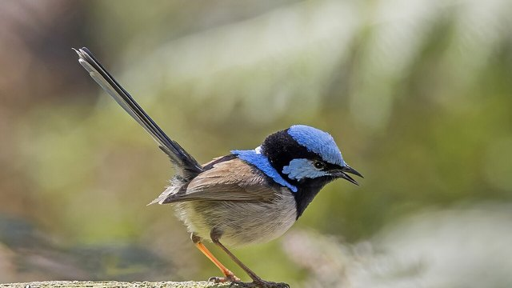

物理5–11 岁约 10 分钟
耳后那撮红对着对面才认得出，耳后没有红就认不出？
同一只纸鹎。耳后那撮红对着对面才认得出；耳后没有红就认不出。鹎的白脸蛋边、眼睛后面长着一小撮红羽，头顶那撮黑羽常竖成尖尖的冠：站上高枝把脸侧转向对面，红亮到对面眼里，同类一眼认出是它；背过身，或耳后本来就没有红，这撮红亮不出来，就认不出。本页不追真的，观察后洗手。
同一只纸鹎，红耳一回，耳后没有红一回

耳后那撮红对着对面才认得出。耳后没有红就认不出。先点「红耳」，再点「试一试」。
先猜一猜，再试
第 1 题：调到 80，耳后那撮红对着对面，认得出吗？
押一个。把滑条调到 80，再点试一试。
第 2 题：调到 10，耳后没有红，还认得出吗？
押好后滑条 10，再试一试。
第 3 题：调到 50，刚好一半，算认得出了吗？
押好后滑条 50，再试一试。
同一只纸鹎：耳后那撮红对着对面才认得出；耳后没有红就认不出
先点「红耳」再点「试一试」，看认得出。再点「没红」试一次，看是不是认不出。
纸鹎始终是同一只。要紧的是耳后那撮红露不露：红羽长在脸侧、眼睛后面，小小一撮，配着白脸蛋才显眼；脸侧转向对面，红亮到对面眼里，同类才认出是它；耳后没有红，怎么转脸也亮不出来，就认不出。八哥靠叫声认，比的是叫——另开，不比。
舞台上的「认得出」是本页比较尺子：滑条 ≥ 80 才算认得出。刚好 50 还不够。不追真的，观察后洗手。本页用纸板。
红耳图鉴
点一张，对照舞台：谁让耳后那撮红对着对面才认得出，谁让耳后没有红就认不出。
点一张图鉴，对照为什么耳后那撮红对着对面才认得出。
猜一猜
同一只纸鹎要认得出，靠的是红耳，还是耳后没有红？
先押一个，再点「看答案」。
任务：红耳和耳后没有红都试
先把滑条调到 80 或更高试一次，再调到 20 或更低试一次。两头都点过「试一试」即可完成。
开放式提示不会代替上面的正式任务。
尚未完成：先红耳试一次，或耳后没有红试一次。
同一只纸鹎，先红耳试一次，再对照试一次
舞台上只改一件事：耳后那撮红对着对面有多够。同一只纸鹎，先红耳试一次，看认不认得出；再对照试一次，看是不是认不出。这样比，才知道认得出靠的是脸侧那撮红亮到对面眼里，不是「叫得更响」，也不是「换成鹪鹩」。
回家只带两句：「耳后那撮红对着对面才认得出」；「耳后没有红就认不出」。不要写成「叫一声就认得出」。
脸侧转向对面，那撮红亮到对面眼里，同类一眼认出是它。
耳后没有红，记号亮不出来；认鹎要看耳后那撮红。

鹪鹩耳后没红，认它靠圆圆的有门巢，另开；本页比红露不露，两句不要并成一句。
不追、不抓，本页用纸板对照。
这在教什么：孩子要能对红耳和耳后没有红各报成不成，并否定「鹪鹩那种圆巢」和「换一套就一样」。
- 本页比的是纸鹎把脸侧转向对面让眼睛后面那撮红亮到对面眼里被同类认出，还是鹪鹩靠那只圆圆的有门巢认家那种童话？
- 耳后没有红，台上还认得出吗？
- 本页比的是把脸侧转向对面、让眼睛后面那撮红亮到对面眼里被同类认出，还是鹪鹩靠那只圆圆的有门巢认家？
- 能去追真的鹎吗？
认得出靠耳后那撮红对着对面，不是鹪鹩那种圆巢，更不要去追真的
鹎常站上院子、树丛的高枝：眼睛后面那撮红羽配着白脸蛋，头顶黑冠竖成尖尖的轮廓；脸侧转向对面，红亮到对面眼里，同类一眼认出是它；耳后没有红，怎么转也亮不出这块记号，就认不出。
不要把它讲成「叫一声就认得出」或「换成鹪鹩就行」。鹪鹩认家靠圆圆的有门巢，是另一套；八哥靠叫声认，又是一家的账。认鹎，先看耳后那撮红对没对着对面。
不追活鸟，不抓。看完按二十秒洗手。本页用纸板。
给家长的问题
- 红耳那一次，孩子指的是耳后那撮红对着对面，还是在说「它比较猛」？让他再指一次耳后那撮红对着对面。
- 耳后没有红，为什么认不出？哪一句四岁听得懂？
- 如果他说「鹪鹩那种圆巢就能进」——鹪鹩那种圆巢是哪一笔账？本页少的是红耳还是鹪鹩那种圆巢？
- 鹪鹩那种圆巢和鹎红耳，差在「鹪鹩那种圆巢」还是「耳后那撮红对着对面」？
- 不追真的、看完洗手：红线怎么说？本页能当乱追真动物的课吗？
背后的原理
舞台上不写这些词，留给孩子用眼睛看。鹎（Pycnonotus）耳后那撮红对着对面，才认得出。耳后没有红就认不出。不要追真的。本页用红耳 ≥ 80 当门槛，≤ 20 算耳后没有红。刚好 50 不算。
这不是鹪鹩那种圆巢说明书，也不是叫一声。鹪鹩那种圆巢另开，都不要并进本页第一完成句。
人去追活鹎会让它受惊。观察后洗手。舞台用纸板。
接下来可以去
带走句：耳后那撮红对着对面才认得出；耳后没有红就认不出。鹎观察站看真红耳。